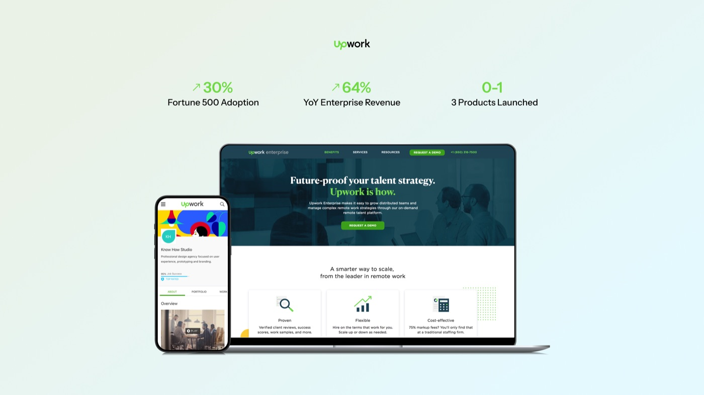
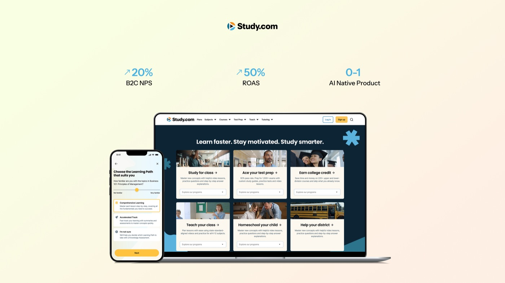
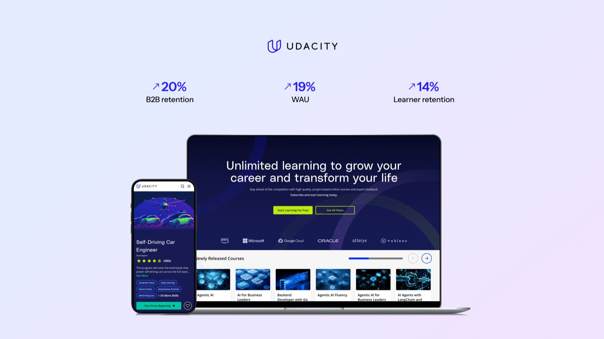
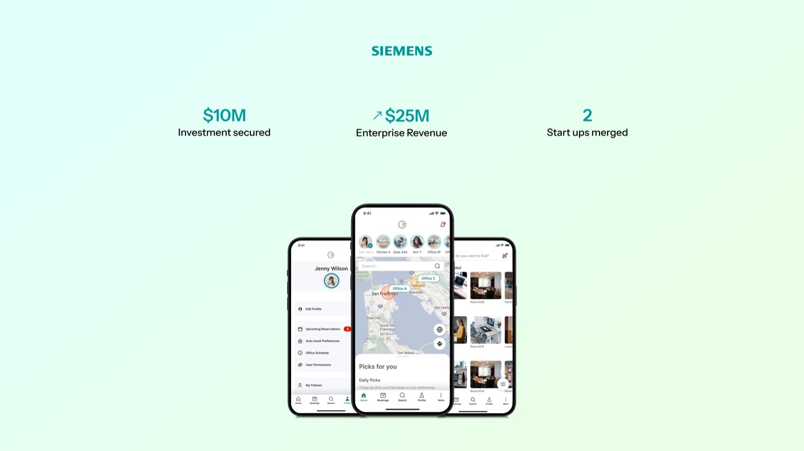
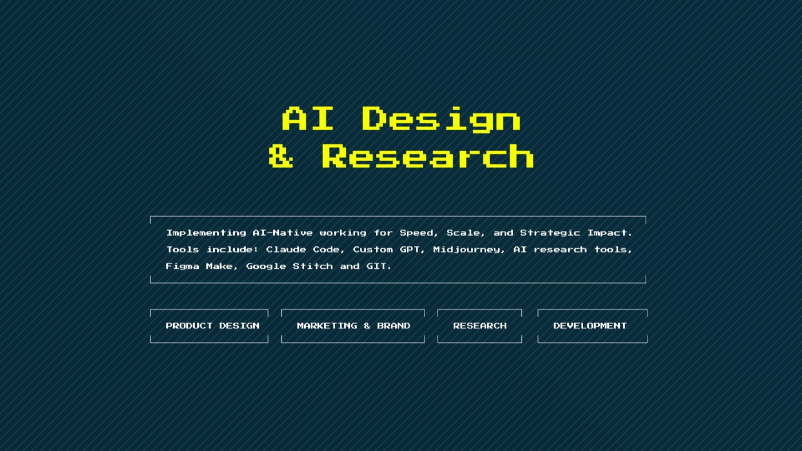

Upwork
I’m a curious full-stack design leader with B2C & B2B SaaS, marketplace and ed-tech experience. I have shipped industry defining products that have delighted customers and led to VC funding, IPOs, and acquisitions. I enjoy leading teams and being hands on with AI and new products. Learn more about my leadership principles.





Right now, I lead Design, Research & Brand at Study.com helping 30 million weekly learners achieve their goals with AI-native, interactive learning. My teams of designers, researchers and creatives have launched a new app, design system and brand in the last year. I lead the company’s AI Steering Committee, helping all employees adopt AI into their daily work and develop tools to enable scale and quality. My day to day involves guiding vision, co-creating product strategy and identifying growth and marketing opportunities, personally shipping features and meeting with our customers.
I’ve helped shape design at companies that define industries and reach millions of people. At Upwork, I scaled design team through rapid growth to build two 0-1 products, helping position the company for its IPO. At Udacity, I introduced gamification, AI and pivoted to B2C D2C and led a B2B platform to scale to orgs, a journey that ultimately led to its acquisition by Accenture. At Comfy, I drove design, research, and product strategy from 0 to 1, shaping a vision that secured $10M in funding from Siemens as the first B2C product in this division. Along the way, I’ve also worked with global leaders designing products at B2B, eCommerce and hospitality companies, including designed the mobile app at State Farm and AT&T eCommerce. While at Accenture, I led the San Francisco design studio and was responsible for multiple client projects.
My teams are lean, AI-powered and high in craft. I thrive on curiosity and creativity, and can shift from executive discussions to hands on in Figma and AI tools to ship. Over my career, I’ve also led product management teams, founded companies, and built ventures of my own.
During nights and weekends, I ship personal projects, experiment with AI, and produce music. I’ve built products like AskMentra (an AI-powered resume and cover letter assistant), a synthetic user community for early feedback and reactions, SendPerks (affiliate marketing for indie creators and AI builders), DirectHire.club (a marketplace connecting job seekers with trusted referrers). These ventures keep me hands-on, help me test ideas fast, and bring back insights that make me a stronger leader in my day-to-day work.